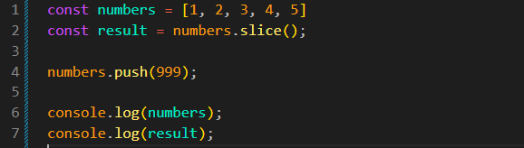
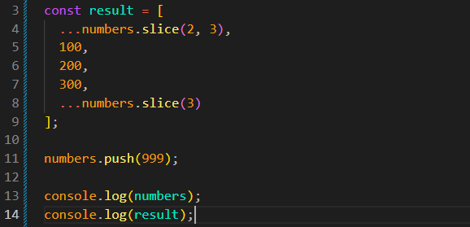

Array Copying
Intro
Agora iremos ver como copiar arrays. Isso é importante porque, em frameworks modernos como React e Angular, devemos evitar mutações quando não queremos alterar o array original.
Agora iremos ver como copiar arrays. Isso é importante porque, em frameworks modernos como React e Angular, devemos evitar mutações quando não queremos alterar o array original.
JS:

Usando o slice() sem parâmetros, criamos uma cópia de todo o array, do início ao fim.
Usando o concat() sem parâmetros, também criamos uma cópia do array original.
Cria um novo array a partir do array numbers. Também pode ser usado para criar um array a partir de uma string. Ex: result = Array.from('David') resulta em ['D', 'a', 'v', 'i', 'd'].
Uma das maneiras mais simples de copiar um array é usando o spread operator (...). Ele espalha os elementos do array dentro de um novo array.
const result = [
...numbers.slice(0, 2),
100,
200,
300,
...numbers.slice(2)
];

Na maioria dos casos, podemos usar o spread para criar cópias. Também podemos usar o slice() quando for mais conveniente. Depois de criar uma cópia, podemos aplicar métodos que fazem mutação nela sem alterar o array original.